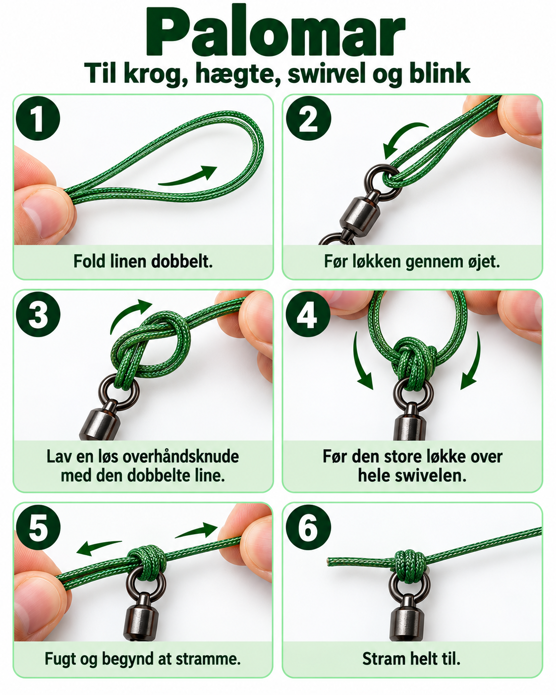
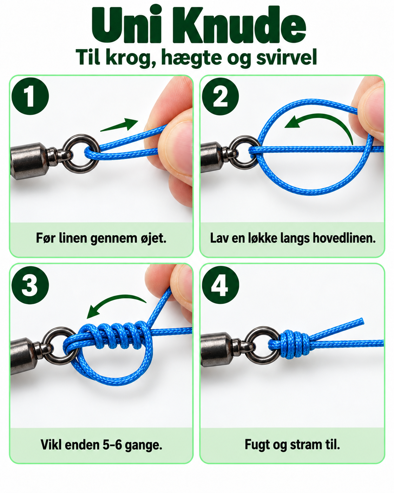
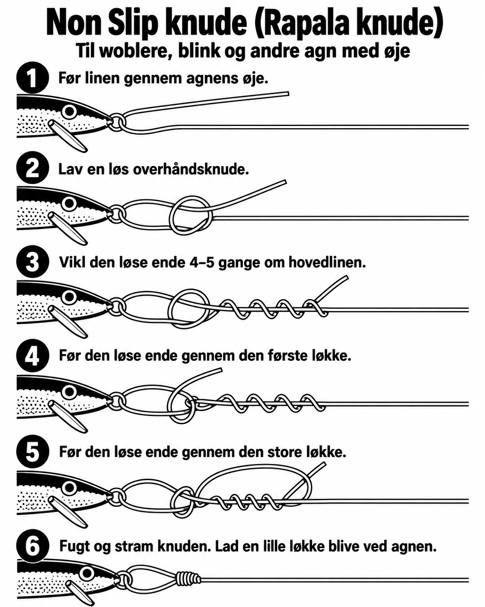

Knudeguiden
Fiskeri og outdoor. Store billeder, få trin og enkel betjening, også når det er mørkt, koldt eller fingrene er stive.
🎣 Fiskeri10 knuder til flåd, bombarda, forfang, fluer og agn🏕️ Outdoor18 knuder til lejr, tarp, fastgørelse og bikepacking
Version 1: De knudebilleder du allerede har godkendt er indsat. Resten står tydeligt som “Afventer billede”, så ingen ikke-godkendt illustration kommer med ved en fejl.
🎣 Fiskeri
1PalomarKrog, hægte, svirvel og blink✓ Godkendt

2Uni knudeKrog, hægte og svirvel✓ Godkendt

3Improved ClinchKrog, flue og små agnAfventer billede
Illustration indsættes efter godkendelse
4Double UniFletline til nylon eller fluorocarbonAfventer billede
Illustration indsættes efter godkendelse
5KirurgknudeHurtig samling af forfang og lineAfventer billede
Illustration indsættes efter godkendelse
6StopperknudeGlideflåd og bombardaAfventer billede
Illustration indsættes efter godkendelse
7Non Slip / Rapala knudeFluer, woblere og gummidyr med fri bevægelse✓ Godkendt

8AlbrightSaml liner med forskellig tykkelseAfventer billede
Illustration indsættes efter godkendelse
9Surgeon’s End LoopFast løkke på forfangAfventer billede
Illustration indsættes efter godkendelse
10Rapala knudeLøkkeknude til agn med fri bevægelse✓ Godkendt
🏕️ Outdoor
1Sibirisk knobQuick release omkring træ eller pælAfventer billede
Illustration indsættes efter godkendelse
2Miller’s KnotLiggeunderlag, tæpper og bundterAfventer billede
Illustration indsættes efter godkendelse
3Dobbelt halvstikFastgørelse omkring pæl eller ringAfventer billede
Illustration indsættes efter godkendelse
4TømmerstikTræ, stamme og større emnerAfventer billede
Illustration indsættes efter godkendelse
5Clove HitchHurtig midlertidig fastgørelseAfventer billede
Illustration indsættes efter godkendelse
6LærkehovedRem, ring og hurtig fastgørelseAfventer billede
Illustration indsættes efter godkendelse
7PælestikFast løkke der ikke strammer tilAfventer billede
Illustration indsættes efter godkendelse
8OttetalsknudeEnkel stopperknudeAfventer billede
Illustration indsættes efter godkendelse
9Alpine ButterflyFast løkke midt på rebetAfventer billede
Illustration indsættes efter godkendelse
10BardunstikJusterbar knude til bardunerAfventer billede
Illustration indsættes efter godkendelse
11LastbilknudeSpænd reb hårdtAfventer billede
Illustration indsættes efter godkendelse
12PrusikJusterbar knude på hovedrebAfventer billede
Illustration indsættes efter godkendelse
13Rolling HitchFastgørelse på belastet rebAfventer billede
Illustration indsættes efter godkendelse
14FlagknobSaml to reb, også forskellig tykkelseAfventer billede
Illustration indsættes efter godkendelse
15RåbåndsknobSaml to lige tykke rebAfventer billede
Illustration indsættes efter godkendelse
16Pakke / Parcel KnotBind bundter og udstyr sammenAfventer billede
Illustration indsættes efter godkendelse
17Råbåndsknob quick releaseLet udstyr der skal åbnes hurtigtAfventer billede
Illustration indsættes efter godkendelse
18Slipped Clove HitchHurtig fastgørelse med quick releaseAfventer billede
Illustration indsættes efter godkendelse